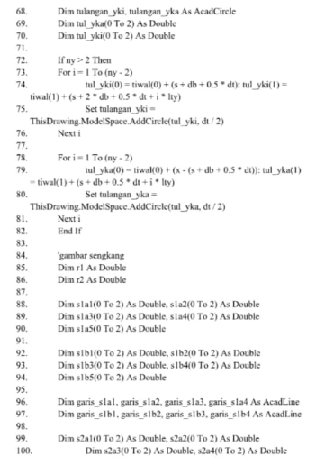
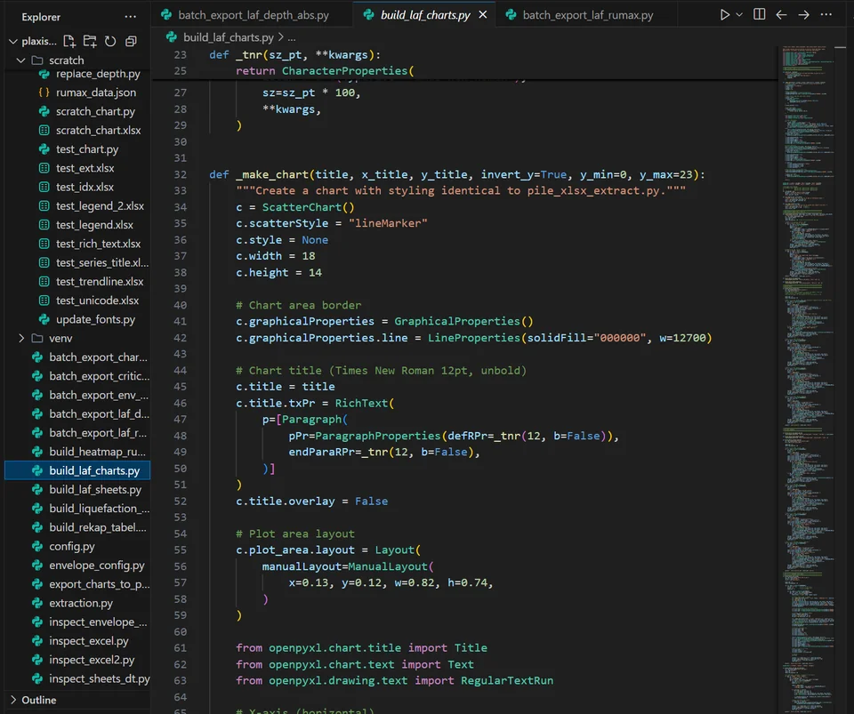
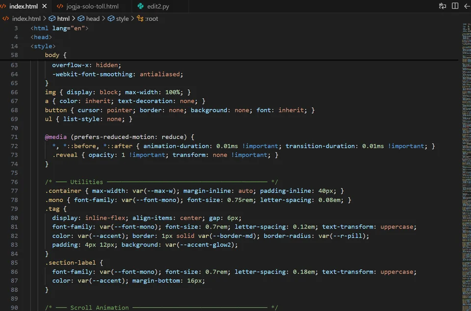

Programming & Automation Works —
A Developer's Journey
Where civil engineering meets code. A growing collection of programming projects, automation tools, AI experiments, and vibe coding adventures — built at the intersection of structural engineering instincts and software curiosity.

It started with a simple frustration: manually drawing reinforcement bar schedules for beam and column designs was slow, repetitive, and error-prone. So I automated it. That first script opened a door — and I haven't stopped walking through it since.
The Journey So Far
Reinforcement Drawing Automation
Built automation scripts to generate reinforcement bar drawings from structural calculation outputs as part of the Civil Engineering Programming course assistance role. This eliminated manual repetition and significantly reduced errors in bar schedule preparation.
AI Tools & Workflows
Started seriously integrating AI tools into engineering workflows — using LLMs for code generation, documentation, research synthesis, and even structural engineering Q&A. Explored prompt engineering patterns that work specifically for technical and mathematical domains.
Vibe Coding & Web Projects
Discovered the power of vibe coding — rapid, intuition-driven software creation with AI assistance. Built web interfaces, utility tools, and this very portfolio website through a combination of design instinct and AI collaboration. The result: shipping things that used to take weeks in hours.
What's Next
Exploring deeper integration of programming with civil engineering workflows — from automated BIM data processing to AI-assisted structural design tools. The intersection of domain expertise and coding ability is where the most interesting problems live.
Technology Stack


